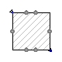
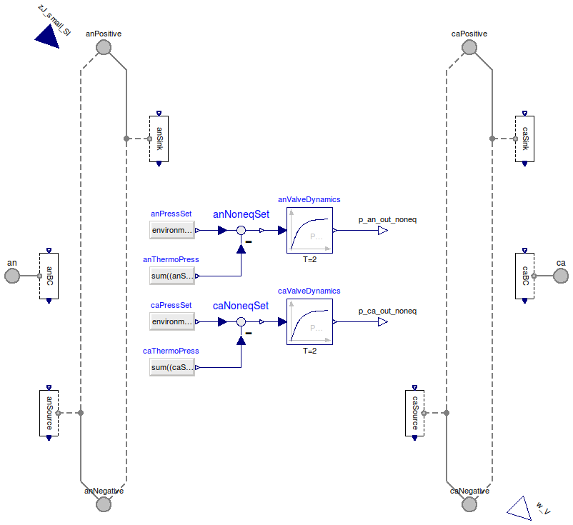
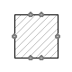
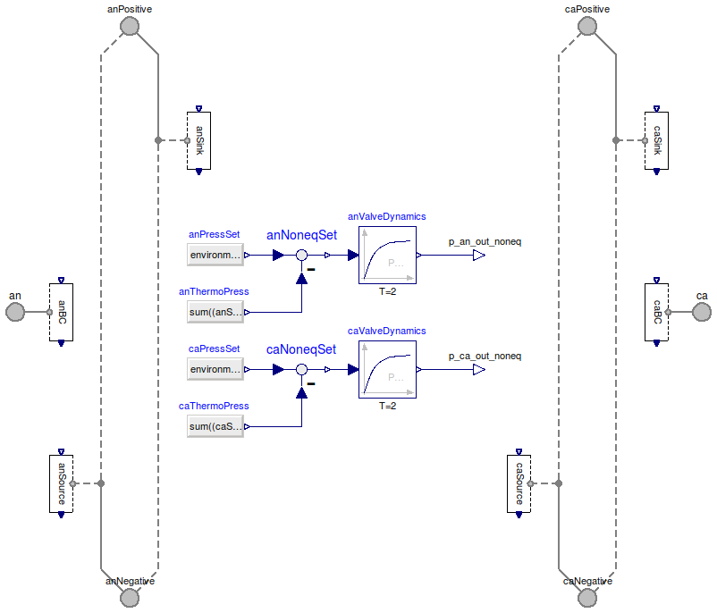

Table of Contents
- User's Guide
- Blocks
- Conditions
- Assemblies
- Regions
- Subregions
- Phases
- Species
- Connectors
- Characteristics
- Units
- Quantities
- Utilities
- Icons
Download
- Latest version (**Empty; please check back soon or contact kdavies4 at gmail.com.)
FCSys.Conditions.TestStands
Test standsInformation
Extends from Modelica.Icons.Package (Icon for standard packages).Package Content
| Name | Description |
|---|---|
| Test stand to perform electrochemical impedance spectroscopy | |
| TestStand | Fuel cell test stand (applies boundary conditions) |
| Choices of options |
 FCSys.Conditions.TestStands.TestStandEIS
Test stand to perform electrochemical impedance spectroscopy
Information
This model modulates the electrical current applied to the cell according to an input. The current density is the sum of a steady-state large-signal current density and a small-signal current density introduced via the input zJsmall SI.
For more information, please see the documentation in the test stand model.
Extends from TestStand (Fuel cell test stand (applies boundary conditions)).
Parameters
| Type | Name | Default | Description |
|---|---|---|---|
| CurrentAreic | zJ | zJ_large + zJ_small_SI*U.A/U… | Current density [N/(l2.T)] |
| CurrentAreic | zJ_large | U.A | Large-signal current density [N/(l2.T)] |
| Cell geometry | |||
| Length | L_x_an[:] | {8*U.mm} | Lengths of the segments through the cell in anode FP [l] |
| Length | L_x_ca[:] | {8*U.mm} | Lengths of the segments through the cell in cathode FP [l] |
| Length | L_y[:] | {U.m} | Lengths of the segments along the channel [l] |
| Length | L_z[:] | {5*U.mm} | Lengths of the segments across the channel [l] |
| Conditions | |||
| Electrical | |||
| ElectricalSpec | electricalSpec | ElectricalSpec.currentDensity | Type of electrical specification |
| Real | u_electrical | U.A/U.cm^2 | Value of the electrical specification |
| Anode | |||
| Side | anInletSide | Side.p | Side of the inlet |
| TemperatureAbsolute | T_an_in | 333.15*U.K | Inlet temperature [l2.m/(N.T2)] |
| PressureAbsolute | p_an_out | U.from_kPag(48.3) | Outlet pressure [m/(l.T2)] |
| FlowSpec | anFlowSpec | FlowSpec.stoich | Type of anode flow specification |
| Real | u_an_flow | 1.5 | Value of the anode flow specification |
| HumiditySpec | anHumiditySpec | HumiditySpec.relative | Type of anode humidity specification |
| Real | u_an_humidity | 0.8 | Value of the anode humidity specification |
| ThermalSpec | anEndPlateSpec | ThermalSpec.temperature | Type of anode end plate specification |
| Real | u_an_end_plate | 333.15*U.K | Value of the anode end plate specification |
| Cathode | |||
| Side | caInletSide | Side.p | Side of the inlet |
| TemperatureAbsolute | T_ca_in | 333.15*U.K | Inlet temperature [l2.m/(N.T2)] |
| PressureAbsolute | p_ca_out | U.from_kPag(48.3) | Outlet pressure [m/(l.T2)] |
| NumberAbsolute | n_O2_in | 0.208 | Dry-gas concentration of O2 at the inlet [1] |
| FlowSpec | caFlowSpec | FlowSpec.stoich | Type of cathode flow specification |
| Real | u_ca_flow | 2.0 | Value of the cathode flow specification |
| HumiditySpec | caHumiditySpec | HumiditySpec.relative | Type of anode humidity specification |
| Real | u_ca_humidity | 0.5 | Value of the cathode humidity specification |
| ThermalSpec | caEndPlateSpec | ThermalSpec.temperature | Type of anode end plate specification |
| Real | u_ca_end_plate | 333.15*U.K | Value of the cathode end plate specification |
| Advanced | |||
| Fluid equations of state | |||
| replaceable package DataH2 | Characteristics.IdealGas | H2 gas | |
| replaceable package DataH2O | Characteristics.IdealGas | H2O gas | |
| replaceable package DataH2Ol | Characteristics.H2O.Liquid | H2O liquid | |
| replaceable package DataN2 | Characteristics.IdealGas | N2 gas | |
| replaceable package DataO2 | Characteristics.IdealGas | O2 gas | |
| Standard conditions (for volumetric flow rate) | |||
| TemperatureAbsolute | T_0 | 273.15*U.K | Temperature [l2.m/(N.T2)] |
| PressureAbsolute | p_0 | U.atm | Pressure [m/(l.T2)] |
Connectors
| Type | Name | Description |
|---|---|---|
| FaceBus | an[n_y, n_z] | Interface to the anode end plate |
| FaceBus | anNegative[n_x_an, n_z] | Negative interface to the anode flow channel |
| FaceBus | anPositive[n_x_an, n_z] | Positive interface to the anode flow channel |
| FaceBus | ca[n_y, n_z] | Interface to the cathode end plate |
| FaceBus | caNegative[n_x_ca, n_z] | Negative interface to the cathode flow channel |
| FaceBus | caPositive[n_x_ca, n_z] | Positive interface to the cathode flow channel |
| input RealInput | zJ_small_SI | Small-signal current density in SI base units |
| output RealOutput | w_V | Cell potential in volts |
Modelica definition
model TestStandEIS "Test stand to perform electrochemical impedance spectroscopy" extends TestStand(redeclare Q.Current zI,zJ=zJ_large + zJ_small_SI*U.A/U.m^2); parameter Q.CurrentAreic zJ_large=U.A "Large-signal current density"; Connectors.RealInput zJ_small_SI "Small-signal current density in SI base units"; Connectors.RealOutput w_V "Cell potential in volts"; equation w_V = w/U.V; end TestStandEIS;
 FCSys.Conditions.TestStands.TestStand
Fuel cell test stand (applies boundary conditions)
Information
Any of the settings for the operating conditions can be time-varying expressions. In each group, specify exactly one variable (otherwise the model will be structurally singular).
The relative humidity (anInletRH or caInletRH) may specified to be greater
than 100 %. In that case, liquid
water is injected to provide the amount above saturation. The relative humidity
is taken to be equal to the quotient of the H2O vapor pressure
(pH2O an in or pH2O ca in) and the saturation pressure.
Therefore liquid water will also be injected if the specified vapor pressure is specified
to be above saturation pressure or the specified dew point (Tsat an in or
Tsat ca in) is above the actual temperature.
Equivalent current is the rate of supply of a reactant required to support the given current assuming the reactant is entirely consumed (complete utilization).
Assumptions **review and update:
- The outer x-axis surface of each end plate is each uniform in temperature.
- No heat is conducted from the rest of the cell hardware.
- The voltage is uniform across each end plate.
- There is no turbulence in the fluid at either inlet (i.e., zero transverse velocity at each inlet boundary).
- There is no shear force on the fluid at either outlet.
- The species (gases and liquid) of each stream have the same temperature at each inlet and outlet.
- The sum of the thermodynamic and nonequilibrium pressure is uniform over each inlet and outlet.
- The temperature is uniform over each inlet and outlet.
- There is no diffusion of the reactants (H2 and O2) or liquid water into the cell (only advection).
- There is no diffusion of the fluid species (H2, H2O, N2, and O2) out of the cell (advection only).
- The inlet and outlet pressures are applied to the gas mixture by Dalton's law.
- At the inlet, the liquid has the pressure necessary and sufficient for the prescribed humidity (zero unless RH > 100%).
- At the outlet, the liquid has the same pressure as the gas (Amagat's law).
- There is no net thermal conduction across either outlet.
The temperatures of the endplates (Tan and Tca) should not be equal to the temperature of the environment unless Gan and Gca are explicitly set. Otherwise there will be a mathematical singularity. Regard the environment as the ambient conditions, not the conditions to which the cell is held.
Extends from FCSys.Icons.Names.Top9.
Parameters
| Type | Name | Default | Description |
|---|---|---|---|
| Cell geometry | |||
| Length | L_x_an[:] | {8*U.mm} | Lengths of the segments through the cell in anode FP [l] |
| Length | L_x_ca[:] | {8*U.mm} | Lengths of the segments through the cell in cathode FP [l] |
| Length | L_y[:] | {U.m} | Lengths of the segments along the channel [l] |
| Length | L_z[:] | {5*U.mm} | Lengths of the segments across the channel [l] |
| Conditions | |||
| Electrical | |||
| ElectricalSpec | electricalSpec | ElectricalSpec.currentDensity | Type of electrical specification |
| Real | u_electrical | U.A/U.cm^2 | Value of the electrical specification |
| Anode | |||
| Side | anInletSide | Side.p | Side of the inlet |
| TemperatureAbsolute | T_an_in | 333.15*U.K | Inlet temperature [l2.m/(N.T2)] |
| PressureAbsolute | p_an_out | U.from_kPag(48.3) | Outlet pressure [m/(l.T2)] |
| FlowSpec | anFlowSpec | FlowSpec.stoich | Type of anode flow specification |
| Real | u_an_flow | 1.5 | Value of the anode flow specification |
| HumiditySpec | anHumiditySpec | HumiditySpec.relative | Type of anode humidity specification |
| Real | u_an_humidity | 0.8 | Value of the anode humidity specification |
| ThermalSpec | anEndPlateSpec | ThermalSpec.temperature | Type of anode end plate specification |
| Real | u_an_end_plate | 333.15*U.K | Value of the anode end plate specification |
| Cathode | |||
| Side | caInletSide | Side.p | Side of the inlet |
| TemperatureAbsolute | T_ca_in | 333.15*U.K | Inlet temperature [l2.m/(N.T2)] |
| PressureAbsolute | p_ca_out | U.from_kPag(48.3) | Outlet pressure [m/(l.T2)] |
| NumberAbsolute | n_O2_in | 0.208 | Dry-gas concentration of O2 at the inlet [1] |
| FlowSpec | caFlowSpec | FlowSpec.stoich | Type of cathode flow specification |
| Real | u_ca_flow | 2.0 | Value of the cathode flow specification |
| HumiditySpec | caHumiditySpec | HumiditySpec.relative | Type of anode humidity specification |
| Real | u_ca_humidity | 0.5 | Value of the cathode humidity specification |
| ThermalSpec | caEndPlateSpec | ThermalSpec.temperature | Type of anode end plate specification |
| Real | u_ca_end_plate | 333.15*U.K | Value of the cathode end plate specification |
| Advanced | |||
| Standard conditions (for volumetric flow rate) | |||
| TemperatureAbsolute | T_0 | 273.15*U.K | Temperature [l2.m/(N.T2)] |
| PressureAbsolute | p_0 | U.atm | Pressure [m/(l.T2)] |
Connectors
| Type | Name | Description |
|---|---|---|
| FaceBus | an[n_y, n_z] | Interface to the anode end plate |
| FaceBus | anNegative[n_x_an, n_z] | Negative interface to the anode flow channel |
| FaceBus | anPositive[n_x_an, n_z] | Positive interface to the anode flow channel |
| FaceBus | ca[n_y, n_z] | Interface to the cathode end plate |
| FaceBus | caNegative[n_x_ca, n_z] | Negative interface to the cathode flow channel |
| FaceBus | caPositive[n_x_ca, n_z] | Positive interface to the cathode flow channel |
Modelica definition
model TestStand "Fuel cell test stand (applies boundary conditions)" import saturationPressureSI = Modelica.Media.Air.MoistAir.saturationPressureLiquid; import FCSys.Utilities.average; import FCSys.Utilities.inSign; import FCSys.Conditions.ByConnector.Face.Single; extends FCSys.Icons.Names.Top9; // Geometry parameter Q.Length L_x_an[:]={8*U.mm} "Lengths of the segments through the cell in anode FP"; parameter Q.Length L_x_ca[:]={8*U.mm} "Lengths of the segments through the cell in cathode FP"; parameter Q.Length L_y[:]={U.m} "Lengths of the segments along the channel"; parameter Q.Length L_z[:]={5*U.mm} "Lengths of the segments across the channel"; final parameter Integer n_x_an=size(L_x_an, 1) "Number of subregions along the through-cell axis in anode FP"; final parameter Integer n_x_ca=size(L_x_ca, 1) "Number of subregions along the through-cell axis in cathode FP"; final parameter Integer n_y=size(L_y, 1) "Number of subregions along the channel"; final parameter Integer n_z=size(L_z, 1) "Number of subregions across the channel"; final parameter Q.Area A=sum(L_y)*sum(L_z) "Cross-sectional area"; final parameter Q.Area A_seg[n_y, n_z]=outerProduct(L_y, L_z) "Areas of the yz segments"; final parameter Q.Area A_an_seg[n_x_an, n_z]=outerProduct(L_x_an, L_z) "Areas of the xz segments of the anode flow plate"; final parameter Q.Area A_ca_seg[n_x_ca, n_z]=outerProduct(L_x_ca, L_z) "Areas of the xz segments of the cathode flow plate"; final parameter Q.Area A_an=sum(L_x_an)*sum(L_z) "Total cross-sectional area of the anode flow plate in the xz plane"; final parameter Q.Area A_ca=sum(L_x_ca)*sum(L_z) "Total cross-sectional area of the cathode flow plate in the xz plane"; // Operating conditions // -------------------- // Electrical parameter FCSys.Conditions.TestStands.Enumerations.ElectricalSpec electricalSpec=ElectricalSpec.currentDensity "Type of electrical specification"; Real u_electrical=U.A/U.cm^2 "Value of the electrical specification"; Q.CurrentAreic zJ "Current density"; Q.Current zI "Current"; Q.Potential w "Voltage"; Q.ResistanceElectrical R "Resistance"; Q.Power P "Power"; // // General anode conditions parameter Side anInletSide=Side.p "Side of the inlet"; Q.TemperatureAbsolute T_an_in=333.15*U.K "Inlet temperature"; Q.PressureAbsolute p_an_out=U.from_kPag(48.3) "Outlet pressure"; // // General cathode conditions parameter Side caInletSide=Side.p "Side of the inlet"; Q.TemperatureAbsolute T_ca_in=333.15*U.K "Inlet temperature"; Q.PressureAbsolute p_ca_out=U.from_kPag(48.3) "Outlet pressure"; Q.NumberAbsolute n_O2_in( final max=1, displayUnit="%") = 0.208 "Dry-gas concentration of O2 at the inlet"; // // Anode flow rate parameter FCSys.Conditions.TestStands.Enumerations.FlowSpec anFlowSpec= FlowSpec.stoich "Type of anode flow specification"; Real u_an_flow=1.5 "Value of the anode flow specification"; Q.NumberAbsolute anStoich "Anode stoichiometric flow rate"; Q.CurrentAreic J_an "Equivalent current density of anode supply"; Q.Current I_an "Equivalent current of anode supply"; Q.VolumeRate Vdot_g_an_in "Volumetric flow rate of gas in anode supply"; Q.PressureAbsolute p_an_in "Anode inlet pressure"; // // Cathode flow rate parameter FCSys.Conditions.TestStands.Enumerations.FlowSpec caFlowSpec= FlowSpec.stoich "Type of cathode flow specification"; Real u_ca_flow=2.0 "Value of the cathode flow specification"; Q.NumberAbsolute caStoich "Cathode stoichiometric flow rate"; Q.CurrentAreic J_ca "Equivalent current density of cathode supply"; Q.Current I_ca "Equivalent current of cathode supply"; Q.VolumeRate Vdot_g_ca_in "Volumetric flow rate of gas in cathode supply"; Q.PressureAbsolute p_ca_in "Cathode inlet pressure"; // // Anode humidity parameter FCSys.Conditions.TestStands.Enumerations.HumiditySpec anHumiditySpec=HumiditySpec.relative "Type of anode humidity specification"; Real u_an_humidity=0.8 "Value of the anode humidity specification"; Q.NumberAbsolute anInletRH(displayUnit="%") "Relative humidity at anode inlet"; Q.PressureAbsolute p_H2O_an_in "H2O vapor pressure at anode inlet"; Q.TemperatureAbsolute T_sat_an_in "Dew point at anode inlet"; // // Cathode humidity parameter FCSys.Conditions.TestStands.Enumerations.HumiditySpec caHumiditySpec=HumiditySpec.relative "Type of anode humidity specification"; Real u_ca_humidity=0.5 "Value of the cathode humidity specification"; Q.NumberAbsolute caInletRH(displayUnit="%") "Relative humidity at cathode inlet"; Q.PressureAbsolute p_H2O_ca_in "H2O vapor pressure at cathode inlet"; Q.TemperatureAbsolute T_sat_ca_in "Dew point at cathode inlet"; // // Anode end plate parameter FCSys.Conditions.TestStands.Enumerations.ThermalSpec anEndPlateSpec =ThermalSpec.temperature "Type of anode end plate specification"; Real u_an_end_plate=333.15*U.K "Value of the anode end plate specification"; Q.TemperatureAbsolute T_an "Temperature of anode end plate"; Q.Conductance G_an "Thermal conductance of the anode end plate to the environment"; Q.Power Qdot_an "Heat flow rate from the anode end plate"; // // Cathode end plate parameter FCSys.Conditions.TestStands.Enumerations.ThermalSpec caEndPlateSpec =ThermalSpec.temperature "Type of anode end plate specification"; Real u_ca_end_plate=333.15*U.K "Value of the cathode end plate specification"; Q.TemperatureAbsolute T_ca "Temperature of cathode end plate"; Q.Conductance G_ca "Thermal conductance of the cathode end plate to the environment"; Q.Power Qdot_ca "Heat flow rate from the cathode end plate"; // Material properties replaceable package DataH2 = Characteristics.IdealGas constrainedby Characteristics.BaseClasses.CharacteristicEOS "H2 gas"; replaceable package DataH2O = Characteristics.IdealGas constrainedby Characteristics.BaseClasses.CharacteristicEOS "H2O gas"; replaceable package DataH2Ol = Characteristics.H2O.Liquid constrainedby Characteristics.BaseClasses.CharacteristicEOS "H2O liquid"; replaceable package DataN2 = Characteristics.IdealGas constrainedby Characteristics.BaseClasses.CharacteristicEOS "N2 gas"; replaceable package DataO2 = Characteristics.IdealGas constrainedby Characteristics.BaseClasses.CharacteristicEOS "O2 gas"; // Standard conditions parameter Q.TemperatureAbsolute T_0=273.15*U.K "Temperature"; parameter Q.PressureAbsolute p_0=U.atm "Pressure"; // Derived and measured conditions Q.CurrentAreic zJ_seg[n_y, n_z] "Current density of the segments"; Q.PressureAbsolute p_sat_an_in "Saturation pressure at the anode inlet"; Q.PressureAbsolute p_sat_ca_in "Saturation pressure at the cathode inlet"; Q.Current Ndot_H2Ol_an_in "Flow rate of liquid water into anode"; Q.Current Ndot_H2Ol_ca_in "Flow rate of liquid water into cathode"; Q.Pressure p_H2Ol_an_in "Non-equilibrium pressure on the H2O liquid at the anode inlet"; Q.Pressure p_H2Ol_ca_in "Non-equilibrium pressure on the H2O liquid at the cathode inlet"; Q.TemperatureAbsolute T_an_out "Anode outlet temperature"; Q.TemperatureAbsolute T_ca_out "Cathode outlet temperature"; Q.Velocity phi_an_in[n_y, n_z] "Velocity profile over the anode inlet"; Q.Velocity phi_ca_in[n_y, n_z] "Velocity profile over the cathode inlet"; Q.Velocity phi_an_out[n_y, n_z] "Velocity profile over the anode outlet"; Q.Velocity phi_ca_out[n_y, n_z] "Velocity profile over the cathode outlet"; // Auxiliary measurements output Q.Power Wdot(stateSelect=StateSelect.never) = w*zI "Electrical power output of the cell"; output Q.Power Wdot_yz[n_y, n_z](each stateSelect=StateSelect.never) = -anBC.graphite. 'e-'.face.phi[1] .* anBC.graphite.'e-'.face.mPhidot[1] - caBC.graphite.'e-'.face.phi[ 1] .* caBC.graphite.'e-'.face.mPhidot[1] if environment.analysis "Electrical power of the segments"; output Q.CurrentAreic zJ_yz[n_y, n_z](each stateSelect=StateSelect.never) = - anBC.graphite.'e-'.face.phi[1] .* anBC.graphite.'e-'.face.rho if environment.analysis "Current densities of the segments"; output Q.Current Ndot_H2(stateSelect=StateSelect.never) = sum(anSink.gas.H2.face.Ndot + anSource.gas.H2.face.Ndot) if environment.analysis "Net rate of hydrogen into the cell"; output Q.Current Ndot_H2O(stateSelect=StateSelect.never) = sum(anSink.gas.H2O.face.Ndot + anSource.gas.H2O.face.Ndot) + sum(caSink.gas.H2O.face.Ndot + caSource.gas.H2O.face.Ndot) if environment.analysis "Net rate of water from the cell"; output Q.Current Ndot_O2(stateSelect=StateSelect.never) = sum(caSink.gas.O2.face.Ndot + caSource.gas.O2.face.Ndot) if environment.analysis "Net rate of oxygen into the cell"; output Q.NumberAbsolute anOutletRH( stateSelect=StateSelect.never, displayUnit="%") = anSink.gas.H2O.materialOut.y/( Modelica.Media.Air.MoistAir.saturationPressureLiquid(anSink.gas.H2O.face.T/ U.K)*U.Pa) if environment.analysis "Relative humidity at the anode outlet"; output Q.NumberAbsolute caOutletRH( stateSelect=StateSelect.never, displayUnit="%") = caSink.gas.H2O.materialOut.y/( Modelica.Media.Air.MoistAir.saturationPressureLiquid(caSink.gas.H2O.face.T/ U.K)*U.Pa) if environment.analysis "Relative humidity at the cathode outlet"; Connectors.FaceBus an[n_y, n_z] "Interface to the anode end plate"; Connectors.FaceBus anNegative[n_x_an, n_z] "Negative interface to the anode flow channel"; Connectors.FaceBus anPositive[n_x_an, n_z] "Positive interface to the anode flow channel"; Connectors.FaceBus ca[n_y, n_z] "Interface to the cathode end plate"; Connectors.FaceBus caNegative[n_x_ca, n_z] "Negative interface to the cathode flow channel"; Connectors.FaceBus caPositive[n_x_ca, n_z] "Positive interface to the cathode flow channel"; ByConnector.FaceBus.Single.FaceBusGraphiteOnly anBC[n_y, n_z](each graphite( 'incle-'=true, 'e-'( redeclare function normalSpec = Conditions.ByConnector.Face.Single.TranslationalNormal.currentDensity, redeclare Modelica.Blocks.Sources.Ramp normalSet( height=-U.A/U.cm^2, duration=100.1, startTime=0.1), redeclare function thermalSpec = FCSys.Conditions.ByConnector.Face.Single.Thermal.temperature, thermalSet(y=environment.T)), 'inclC+'=true)); ByConnector.FaceBus.Single.FaceBusGraphiteOnly caBC[n_y, n_z](each graphite( 'incle-'=true, 'e-'(redeclare function thermalSpec = FCSys.Conditions.ByConnector.Face.Single.Thermal.temperature, thermalSet(y=environment.T)), 'inclC+'=true)); ByConnector.FaceBus.Single.FaceBusEfforts anSource[n_x_an, n_z](gas( each inclH2=true, each inclH2O=true, H2( redeclare each function materialSpec = FCSys.Conditions.ByConnector.Face.Single.Material.current, materialSet(y=(anSource.gas.H2.normalOut.y - fill( zI*anStoich/(2*A_an), n_x_an, n_z)) .* A_an_seg), redeclare each function normalMeas = FCSys.Conditions.ByConnector.Face.Single.TranslationalNormal.currentDensity, redeclare each function normalSpec = FCSys.Conditions.ByConnector.Face.Single.Translational.force, each thermalSet(y=environment.T)), H2O( redeclare each function materialSpec = FCSys.Conditions.ByConnector.Face.Single.Material.current, materialSet(y=(anSource.gas.H2O.normalOut.y - fill( zI*anStoich*environment.p_H2O/(2*(environment.p - environment.p_H2O) *A_an), n_x_an, n_z)) .* A_an_seg), redeclare each function normalMeas = FCSys.Conditions.ByConnector.Face.Single.TranslationalNormal.currentDensity, redeclare each function normalSpec = FCSys.Conditions.ByConnector.Face.Single.Translational.force, each thermalSet(y=environment.T))),each liquid(inclH2O=true)); ByConnector.FaceBus.Single.FaceBusFlows anSink[n_x_an, n_z](gas( each inclH2=true, each inclH2O=true, H2(redeclare each function materialMeas = FCSys.Conditions.ByConnector.Face.Single.Material.pressure (redeclare package Data = FCSys.Characteristics.IdealGas), normalSet(y=p_an_out_noneq*A_an_seg .* anSink.gas.H2.face.rho ./ ( anSink.gas.H2.face.rho + anSink.gas.H2O.face.rho))), H2O(redeclare each function materialMeas = FCSys.Conditions.ByConnector.Face.Single.Material.pressure (redeclare package Data = FCSys.Characteristics.IdealGas), normalSet(y=p_an_out_noneq*A_an_seg .* anSink.gas.H2O.face.rho ./ ( anSink.gas.H2.face.rho + anSink.gas.H2O.face.rho)))), each liquid( inclH2O=true)); ByConnector.FaceBus.Single.FaceBusEfforts caSource[n_x_ca, n_z](gas( each inclH2O=true, each inclN2=true, each inclO2=true, H2O( redeclare each function materialSpec = FCSys.Conditions.ByConnector.Face.Single.Material.current, materialSet(y=(caSource.gas.H2O.normalOut.y - fill( zI*caStoich*environment.p_H2O/(4*environment.p_O2*A_ca), n_x_ca, n_z)) .* A_ca_seg), redeclare each function normalMeas = FCSys.Conditions.ByConnector.Face.Single.TranslationalNormal.currentDensity, redeclare each function normalSpec = FCSys.Conditions.ByConnector.Face.Single.Translational.force, each thermalSet(y=environment.T)), N2( redeclare each function materialSpec = FCSys.Conditions.ByConnector.Face.Single.Material.current, materialSet(y=(caSource.gas.N2.normalOut.y - fill( zI*caStoich*(environment.p - environment.p_O2 - environment.p_H2O) /(4*environment.p_O2*A_ca), n_x_ca, n_z)) .* A_ca_seg), redeclare each function normalMeas = FCSys.Conditions.ByConnector.Face.Single.TranslationalNormal.currentDensity, redeclare each function normalSpec = FCSys.Conditions.ByConnector.Face.Single.Translational.force, each thermalSet(y=environment.T)), O2( redeclare each function materialSpec = FCSys.Conditions.ByConnector.Face.Single.Material.current, materialSet(y=(caSource.gas.O2.normalOut.y - fill( zI*caStoich/(4*A_ca), n_x_ca, n_z)) .* A_ca_seg), redeclare each function normalMeas = FCSys.Conditions.ByConnector.Face.Single.TranslationalNormal.currentDensity, redeclare each function normalSpec = FCSys.Conditions.ByConnector.Face.Single.TranslationalNormal.force, each thermalSet(y=environment.T))),each liquid(inclH2O=true)); ByConnector.FaceBus.Single.FaceBusFlows caSink[n_x_ca, n_z](gas( each inclH2O=true, each inclN2=true, each inclO2=true, H2O(redeclare each function materialMeas = FCSys.Conditions.ByConnector.Face.Single.Material.pressure (redeclare package Data = FCSys.Characteristics.IdealGas), normalSet(y=p_ca_out_noneq*A_ca_seg .* caSink.gas.H2O.face.rho ./ ( caSink.gas.H2O.face.rho + caSink.gas.N2.face.rho + caSink.gas.O2.face.rho))), N2(redeclare each function materialMeas = FCSys.Conditions.ByConnector.Face.Single.Material.pressure (redeclare package Data = FCSys.Characteristics.IdealGas), normalSet(y=p_ca_out_noneq*A_ca_seg .* caSink.gas.N2.face.rho ./ ( caSink.gas.H2O.face.rho + caSink.gas.N2.face.rho + caSink.gas.O2.face.rho))), O2(redeclare each function materialMeas = FCSys.Conditions.ByConnector.Face.Single.Material.pressure (redeclare package Data = FCSys.Characteristics.IdealGas), normalSet(y=p_ca_out_noneq*A_ca_seg .* caSink.gas.O2.face.rho ./ ( caSink.gas.H2O.face.rho + caSink.gas.N2.face.rho + caSink.gas.O2.face.rho)))), each liquid(inclH2O=true)); Modelica.Blocks.Sources.RealExpression anPressSet(y(unit="m/(l.T2)") = environment.p) "Setpoint for the total anode outlet pressure"; Modelica.Blocks.Sources.RealExpression caPressSet(y(unit="m/(l.T2)") = environment.p) "Setpoint for the total cathode outlet pressure"; Modelica.Blocks.Sources.RealExpression anThermoPress(y(unit="m/(l.T2)") = sum ((anSink.gas.H2.materialOut.y + anSink.gas.H2O.materialOut.y) .* outerProduct(L_x_an, L_z))/A_an) "Thermodynamic pressure at the anode outlet"; Modelica.Blocks.Sources.RealExpression caThermoPress(y(unit="m/(l.T2)") = sum ((caSink.gas.H2O.materialOut.y + caSink.gas.N2.materialOut.y + caSink.gas.O2.materialOut.y) .* A_ca_seg)/A_ca) "Thermodynamic pressure at the cathode outlet"; Modelica.Blocks.Math.Feedback anNoneqSet; Modelica.Blocks.Math.Feedback caNoneqSet; Modelica.Blocks.Continuous.FirstOrder anValveDynamics(initType=Modelica.Blocks.Types.Init.InitialOutput, T=2) "Dynamics of the anode exit valve"; Modelica.Blocks.Continuous.FirstOrder caValveDynamics(initType=Modelica.Blocks.Types.Init.InitialOutput, T=2) "Dynamics of the cathode exit valve"; protected Connectors.RealOutputInternal p_an_out_noneq(unit="m/(l.T2)") "Nonequilibrium pressure at the anode outlet"; Connectors.RealOutputInternal p_ca_out_noneq(unit="m/(l.T2)") "Nonequilibrium pressure at the cathode outlet"; protected outer Conditions.Environment environment "Environmental conditions"; equation // **remove liq H2O at inlet and outlet (assume no diffusion, adiabatic, no shear force) // Electrical w = R*zI; P = w*zI; A*zJ = zI; zJ_seg = anBC.graphite.'e-'.face.phi[1] .* anBC.graphite.'e-'.face.rho; zI = sum(zJ_seg .* A_seg); // Anode humidity p_sat_an_in = saturationPressureSI(T_an_in/U.K)*U.Pa; p_H2O_an_in = saturationPressureSI(T_sat_an_in/U.K)*U.Pa; p_H2O_an_in = min(anInletRH, 1)*p_sat_an_in; // Liquid makes up the remainder if RH > 100%: Ndot_H2Ol_an_in = max(anInletRH - 1, 0)*sum(phi_an_in .* A_an_seg)/ DataH2O.v_Tp(T_an_in, p_sat_an_in); Ndot_H2Ol_an_in = sum(anSource.liquid.H2O.face.phi[Orient.normal] .* A_an_seg) /DataH2Ol.v_Tp(T_an_in); // Cathode humidity p_sat_ca_in = saturationPressureSI(T_ca_in/U.K)*U.Pa; p_H2O_ca_in = saturationPressureSI(T_sat_ca_in/U.K)*U.Pa; p_H2O_ca_in = max(caInletRH, 1)*p_sat_ca_in; // Liquid makes up the remainder if RH > 100%: Ndot_H2Ol_ca_in = max(caInletRH - 1, 0)*sum(phi_ca_in .* A_ca_seg)/ DataH2O.v_Tp(T_ca_in, p_sat_ca_in); Ndot_H2Ol_ca_in = sum(caSource.liquid.H2O.face.phi[Orient.normal] .* A_ca_seg) /DataH2Ol.v_Tp(T_ca_in); // End plates Qdot_an = G_an*(T_an - environment.T) "Anode"; Qdot_ca = G_ca*(T_ca - environment.T) "Cathode"; Qdot_an = sum(anBC.graphite.'C+'.face.Qdot + anBC.graphite.'e-'.face.Qdot); Qdot_ca = sum(caBC.graphite.'C+'.face.Qdot + caBC.graphite.'e-'.face.Qdot); // Anode flow rate anStoich*zI = I_an; J_an*A = I_an; Vdot_g_an_in = inSign(anInletSide)*sum(outerProduct(L_x_an, L_z) .* phi_an_in); I_an = sum(phi_an_in .* anSource.gas.H2.face.rho .* A_an_seg); // Cathode flow rate caStoich*zI = I_ca; J_ca*A = I_ca; Vdot_g_ca_in = inSign(caInletSide)*sum(outerProduct(L_x_ca, L_z) .* phi_ca_in); I_ca = sum(phi_ca_in .* caSource.gas.H2O.face.rho .* A_ca_seg); // Pressures at the inlets and outlets for j in 1:n_z loop for i in 1:n_x_an loop p_an_in = DataH2.p_Tv(anSource[i, j].gas.H2.face.T, 1/anSource[i, j].gas.H2.face.rho) + DataH2O.p_Tv(anSource[i, j].gas.H2O.face.T, 1/anSource[i, j].gas.H2O.face.rho) - inSign(anInletSide)*(anSource[i, j].gas.H2.face.mPhidot[Orient.normal] + anSource[i, j].gas.H2O.face.mPhidot[Orient.normal])/A_an_seg[i, j]; p_an_out = DataH2.p_Tv(anSink[i, j].gas.H2.face.T, 1/anSink[i, j].gas.H2.face.rho) + DataH2O.p_Tv(anSink[i, j].gas.H2O.face.T, 1/anSink[i, j].gas.H2O.face.rho) + inSign(anInletSide)*(anSink[i, j].gas.H2.face.mPhidot[Orient.normal] + anSink[i, j].gas.H2O.face.mPhidot[Orient.normal])/A_ca_seg[i, j]; end for; for i in 1:n_x_ca loop p_ca_in = DataH2O.p_Tv(caSource[i, j].gas.H2O.face.T, 1/caSource[i, j].gas.H2O.face.rho) + DataN2.p_Tv(caSource[i, j].gas.N2.face.T, 1/caSource[i, j].gas.N2.face.rho) + DataO2.p_Tv(caSource[i, j].gas.O2.face.T, 1/caSource[i, j].gas.O2.face.rho) - inSign(caInletSide)*(caSource[i, j].gas.H2O.face.mPhidot[Orient.normal] + caSource[i, j].gas.N2.face.mPhidot[Orient.normal] + caSource[i, j].gas.O2.face.mPhidot[ Orient.normal])/A_ca_seg[i, j]; p_ca_out = DataH2O.p_Tv(caSink[i, j].gas.H2O.face.T, 1/caSink[i, j].gas.H2O.face.rho) + DataN2.p_Tv(caSink[i, j].gas.N2.face.T, 1/caSink[i, j].gas.N2.face.rho) + DataO2.p_Tv(caSink[i, j].gas.O2.face.T, 1/caSink[i, j].gas.O2.face.rho) + inSign(caInletSide)*(caSink[i, j].gas.H2O.face.mPhidot[Orient.normal] + caSink[i, j].gas.N2.face.mPhidot[Orient.normal] + caSink[i, j].gas.O2.face.mPhidot[ Orient.normal])/A_ca_seg[i, j]; end for; end for; // Assumptions 0 = sum(anSink.gas.H2.face.Qdot + anSink.gas.H2O.face.Qdot + anSink.liquid.H2O.face.Qdot) "Adiabatic across the anode outlet"; 0 = sum(caSink.gas.H2O.face.Qdot + caSink.gas.N2.face.Qdot + caSink.gas.O2.face.Qdot + caSink.liquid.H2O.face.Qdot) "Adiabatic across the cathode outlet"; if anInletSide == Side.n then connect(anSource.face, anNegative); connect(anSink.face, anPositive); else connect(anSource.face, anPositive); connect(anSink.face, anNegative); end if; if caInletSide == Side.n then connect(caSource.face, caNegative); connect(caSink.face, caPositive); else connect(caSource.face, caPositive); connect(caSink.face, caNegative); end if; connect(anBC.face, an); connect(caBC.face, ca); connect(anValveDynamics.y, p_an_out_noneq); connect(caValveDynamics.y, p_ca_out_noneq); connect(caPressSet.y, caNoneqSet.u1); connect(caThermoPress.y, caNoneqSet.u2); connect(caNoneqSet.y, caValveDynamics.u); connect(anPressSet.y, anNoneqSet.u1); connect(anNoneqSet.u2, anThermoPress.y); connect(anNoneqSet.y, anValveDynamics.u); end TestStand;